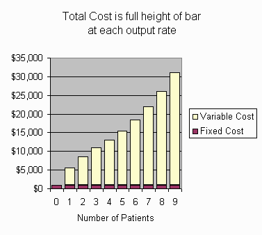
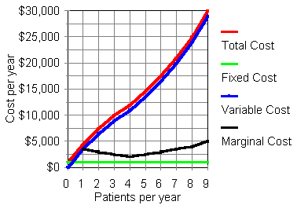

Economics tutorials by Samuel L. Baker are licensed under a Creative Commons Attribution-ShareAlike 4.0 International License.
Copyright © 1985-2000 Samuel L. Baker. Last modified 8/19/2013.
This tutorial introduces economics concepts of total cost, fixed cost, variable cost, and marginal cost.
Firms and institutions, whether for-profit or non-profit, use these cost concepts for pricing and output decisions. These concepts form the basis for much of cost accounting.
We'll use for illustration an imaginary firm, Joan's Home Care Services, which uses nurses, supplies, and machinery to maintain patients with a certain ailment. As a starting point, we assume that Joan's already knows what their total cost would be for maintaining any number of patients for a year.
In practice, developing that cost information requires considerable work. We assume that this work has been done.
Total cost is a flow. It is always over a certain period of time. If you're talking about, say, the total cost of 100 trauma patients in an emergency department, have in mind that you are really talking about the total cost of 100 trauma patients in a month, or whatever time period you want.
Total cost can be divided into two portions: Fixed Cost and Variable Cost.
For those of you who like graphs, here is a graph
illustrating total, variable, and fixed cost for Joan's Home Care. In
this tutorial, we will be working with the numbers in this graph.

Which costs are fixed and which costs are variable depends on your time horizon. In what economists call the "short run," labor cost (staffing) might be fixed. A lab may have a certain number of technicians, for example. From day to day, its cost for materials might vary, depending on how many tests it does, but the labor cost is fixed. In the "longer run," labor costs might be variable, as the lab adjusts staffing to the demand for its tests, but costs for its facility (space and major equipment) would be fixed. In the "long run," the lab can change its space and equipment. No costs would be fixed in the long run.
For Joan's, we'll imagine an intermediate run, where labor and materials are variable costs, but overhead is not. (The cost numbers in the following tables are made up for illustrative purpose. They are not represented as realistic.)
Suppose that Joan's has done its accounting work, and has come up with these figures for what it costs Joan's Home Care to maintain various numbers of patients for a year. (Assume that patients sign one year contracts, so we don't have to bother with fractions of patients. This makes things simpler.)
Number of Patients Total Cost
0 $ 1000
1 $ 4500
2 $ 7500
3 $ 10000
4 $ 12000
5 $ 14500
6 $ 17500
7 $ 21000
8 $ 25000
9 $ 30000
How much is the fixed cost?
$
Now let's do variable cost. The variable cost is that portion of total cost that varies when the rate of output varies.
How much is the variable cost of having one patient?
$
How much is the variable cost of having 4 patients?
$
How much is the variable cost of having 9 patients?
$
In practice, a firm would probably proceed in the reverse order from the way we did. It would understand that total cost is made up of fixed cost and variable cost. It would figure out what its fixed cost is and what its variable costs are at different rates of output. Then it would add the fixed and variable cost to get the total cost.
Number of Patients Total Cost
0 $ 1000
1 $ 4500
2 $ 7500
3 $ 10000
4 $ 12000
5 $ 14500
6 $ 17500
7 $ 21000
8 $ 25000
9 $ 30000
How much is the marginal cost of the first patient?
$
How much is the marginal cost of the 4th patient?
$
How much is the marginal cost of the 9th patient?
$
Notice that, in writing these marginal cost questions, I used ordinal numbers (1st, 4th, 9th), rather than cardinal numbers (1, 4, 9).
By
the way, when you calculate the marginal cost, do you take the difference
between the total cost numbers or do you take the difference between the variable cost numbers?
Total cost. You take the difference between the total cost at that output rate and the total cost at the next lower output rate.
Variable cost. You take the difference between the variable cost at that output rate and the variable cost at the next lower output rate.
Either is OK.
Here are those cost numbers in a graph.

Total
cost and variable cost are cumulative. That's why their graph lines go up
and up. The variable cost line parallels the total cost line. At all output rates, variable cost is $1000 less than total cost.
Fixed cost is not cumulative because it's -- well -- fixed. The fixed cost here is a horizontal line at $1000.
Marginal cost on this graph is the difference between the total cost of the given output rate and the total cost of the next lower output rate. The marginal cost curve dips for the first few patients, indicating "increasing returns to scale." ("Scale" means size, which here means output rate.) After the fourth patient, "diminishing returns to scale" set in, and marginal cost per added patient rises with each patient. Economics textbook diagrams typically have U-shaped marginal cost curves like this.
The total and variable cost curves bend down a bit for output rates from 0 to 4, because the marginal cost is falling. For output rates from 4 to 9, marginal cost is increasing, so the total and variable cost curves bend up a bit.
That's all for now. Thanks for participating!
The economics tutorials list.